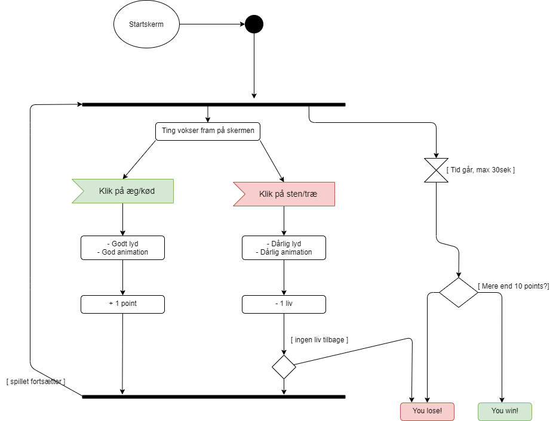
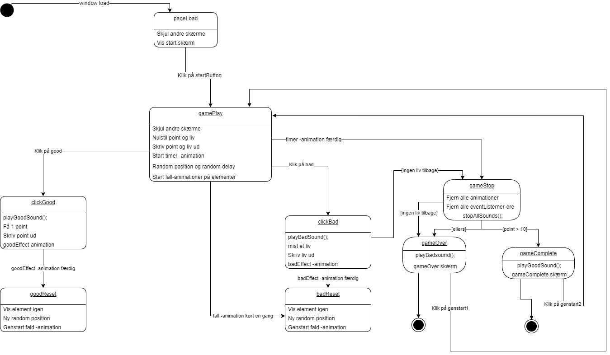

Aktivitetsdiagram
Et simpelt diagram der viser hvad som sker i spillets flow. Ting vokser frem, du klikker - presto! Plus points eller minus liv afhengig hvis det er "good" eller "bad" things.
State-machine diagram.
Viser hvad som sker bagom grafiken.
Hvad sker nar man klikker pa noget?
Hvornar spiller lyd
op
og hvordan far man points?
